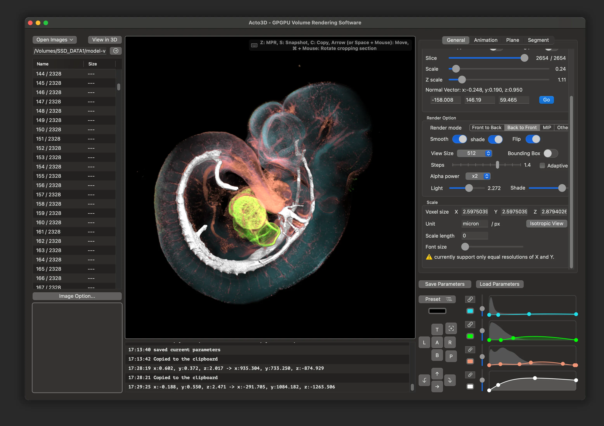
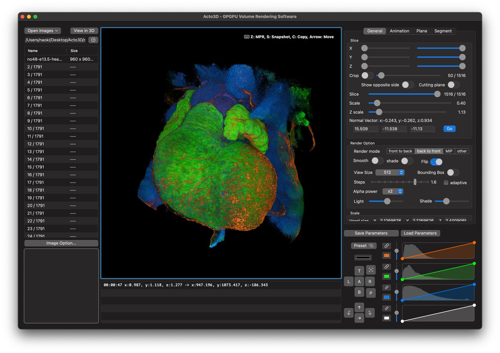
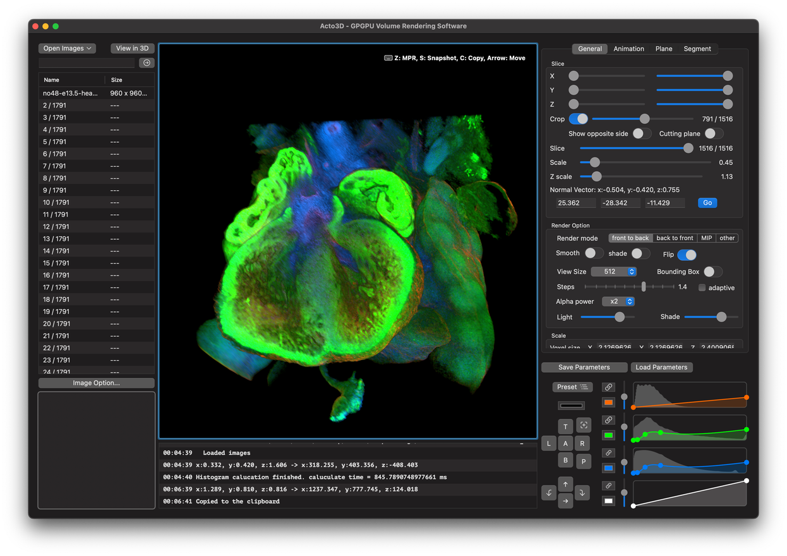
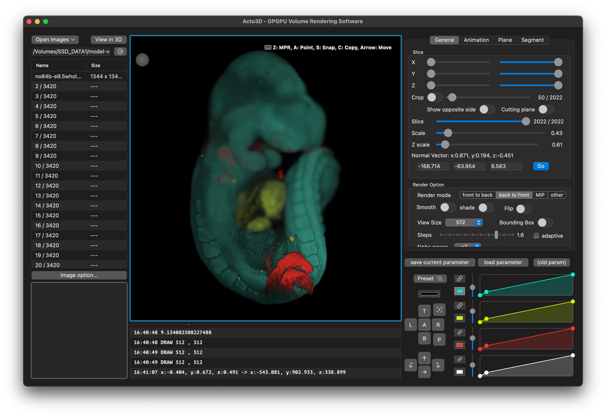
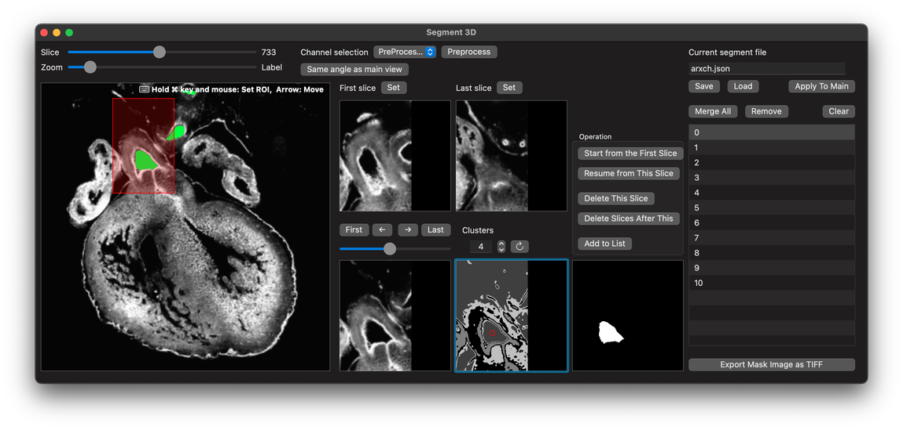

- 
- 
- 
- 

- 
3D Microscopy Visualization,
Anywhere, Anytime
Acto3D brings high-end volume rendering to your mac.
Acto3D is optimized to take full advantage of Apple silicon, delivering remarkably smooth performance using only your Mac’s built-in GPU. With Acto3D, researchers can now explore complex volumetric data directly on a MacBook. Whether in the lab, at home, or during a conference, powerful 3D insights are always at your fingertips.
Effortless 3D Visualization,
Straight from Fiji
All you need to do is convert your fluorescence images to TIFF with Fiji.
Precision Control
Over Volume Rendering
Intuitive transfer function editing with real-time feedback.
Acto3D provides a fully interactive transfer function editor, allowing seamless adjustment of color and opacity curves across multiple channels. Users can fine-tune rendering in real time, enhancing contrast and highlighting specific features within complex volumetric datasets.
3D Masking
Efficient segmentation of enclosed structures — from any angle in 3D.
Ready to use
Just download it

Even More Freedom in Visualization
Free Sectioning
Animation
kernel void FTB(){
Cin = Cout;
Ain = Aout;
Cvoxel = (float4)args.tex.sample
(args.smp, texCoordinate);
}